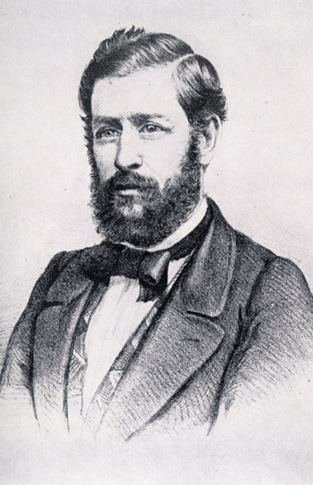

Ignacio Zaragoza

Felipe Berriozabal

Porfirio Diaz

Santiago Tapia
Ignacio Mejia
Miguel Negrete

Marca la primera vez que el ejército mexicano pudo derrotar a una potencia extranjera mejor preparada, en este caso los franceses. La batalla tuvo lugar en la actual ciudad de Puebla de Zaragoza el 5 de mayo de 1862, entre los ejércitos de México y Francia.
.
Finalmente, el ejército francés fue derrotado y el general Ignacio Zaragoza, mandó un mensaje telegráfico al presidente Juárez, que decía “Las armas nacionales se han cubierto de gloria”.

El 5 de mayo, el estado mexicano de Puebla se viste de fiesta y se celebran eventos culturales, desfiles y exposiciones. Este martes se realizará el Desfile Cívico-Militar, que comenzará en el Arco de Loreto y concluirá en el Boulevard 5 de Mayo y 25 Oriente, según ha publicado el portal oficial del evento '5demayopuebla'. En el desfile participan más de 6.000 personas, entre militares, actores, estudiantes o docentes.
Formalmente, la idea de monumento es abstraída para diseñar un espacio que va de lo abierto a lo cerrado, de la escultura vertical a la horizontal; impulsando la convivencia a través de los intersticios que surgen de la elevación premeditada de niveles.


 1
1 2
2 6
6